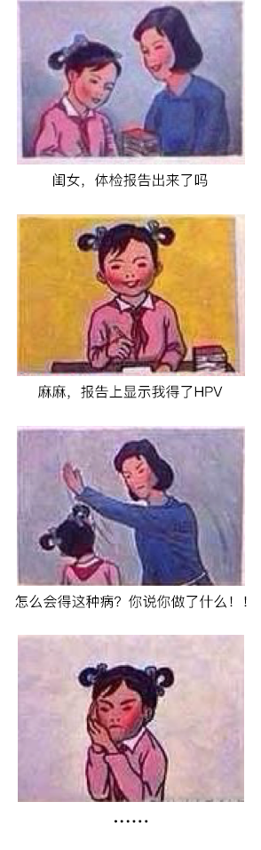
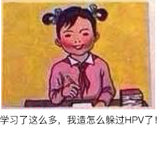

得了HPV就一定是坏女孩吗？
……
谈到HPV，许多人就认为一定是性生活不检点才会感染这种病毒。其实，即便只和男朋友一个人爱爱，也有可能感染HPV。如果一概而论，认为感染HPV的就是坏女孩，那可就冤枉了不少女孩呐~
那么HPV究竟如何传播的呢？HPV病毒存在于日常环境中，传染途径除了主要有爱爱之外，也可通过皮肤接触传播，如卫生间、浴缸等。
其实，HPV是每个女孩成长道路中的一道“劫难”。在国外，研究表明女性在她的一生中发生至少一次HPV感染的机率为85% ，而且感染HPV的女性中80%是在45岁以前感染的 。在我国，15～24岁的城市女性最有可能感染HPV，而因为没有症状导致不易被发觉，只有到医疗机构检查时才有可能发现。
虽然HPV病毒在我们生活的环境中无处不在，这并不意味着我们对它就束手无策~~
下面，到了重点科普时间，以下这些都是HPV感染/宫颈癌的高危人群，如果你能对号入座，那一定要引起重视了~
• “初尝禁果过早”类：初次性生活年龄较小
• “伴侣较多博爱”类：女孩拥有多个爱爱伴侣，伴侣又有多个女性伴侣或者有患宫颈癌的女性伴侣
• “生活习惯不健康”类：吸烟 、酗酒者
• “难言之隐羞涩”类：感染过HPV或湿疣病的；患有性传播性疾病者；疱疹病毒（HSV）感染史者
得了HPV不代表就是坏女孩，但女孩如果不注意保持健康积极的生活方式，就会被这无处不在的病毒钻了空子。
